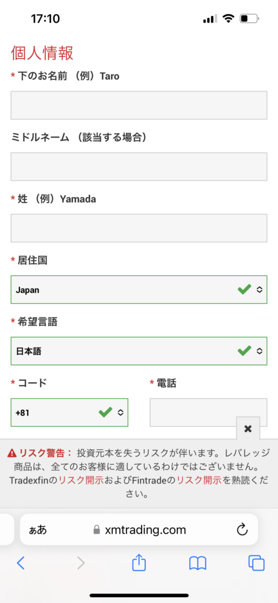
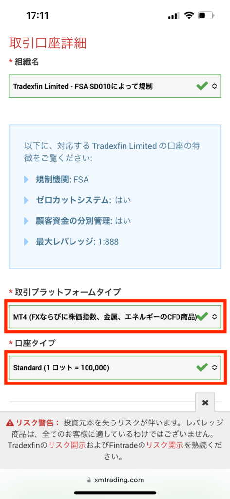
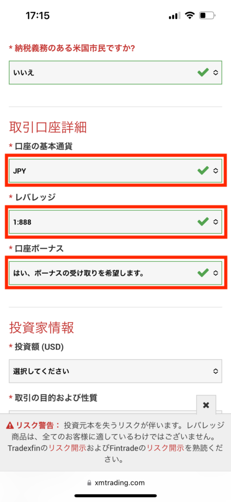
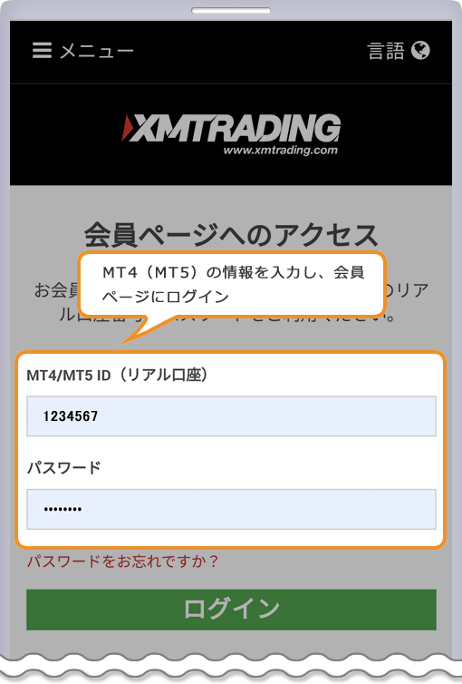
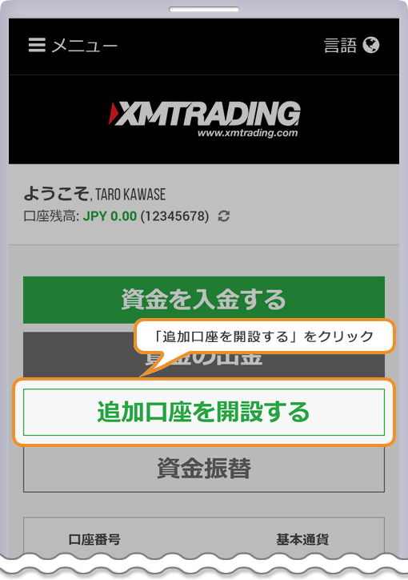

自動売買システムを運用するための３ステップ
1.XMの証券会社に登録
2.XMにご入金
3.VPSに登録
すでにXMに登録されている場合は追加口座の登録方法をご覧ください。
XMの登録方法
※必ず↓↓指定のリンクからXMの口座登録画面を開き、登録をお願いします
1.情報を入力してください。

「組織名」どちらを選択しても良いです。
「取引プラットフォーム」をMT4
「口座タイプ」をMicro（マイクロ）
にして登録をしてください。
※この通りに登録しないと口座の作り直しとなります。

2.取引口座詳細
情報を入力するページの下に、取引口座を選択する項目があります。
「口座の基本通過」をJPY
「レッバレッジ」を1.888
「口座ボーナス」をはい、ボーナスの受け取りを希望します。
上記で選択してください。
※この通りに登録しないと口座の作り直しとなります。


3.メールが届いたら、口座番号をLINEに教えてください。
※必ず↓↓指定のリンクからXMの口座登録画面を開き、登録をお願いします
================================
すでにXMのリアル口座をお持ちの方は以下の通り追加口座を申請してください。
※必ずこちらのリンクからXMに移動してください
XMTrading会員ページ
※リンクから移動しないとやり直しになる可能性がございます。
1.上記のリンクからアクセスしてログイン

２.追加口座を開設するをクリック

３.追加口座を開設するをクリック
情報を入力して登録
「取引プラットフォーム」をMT4
「口座タイプ」をMicro（マイクロ）
「口座の基本通過」をJPY
「レッバレッジ」を1.888
「口座ボーナス」をはい、ボーナスの受け取りを希望します。
私のLINE公式アカウント
よりご連絡いただければと思います。